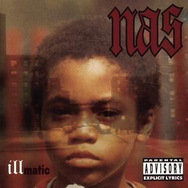
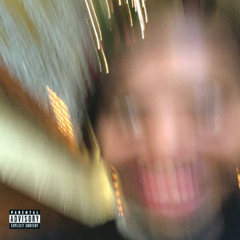

Blonde - Frank Ocean
Okay, we know that we said these albums were in no particular order… but Blonde? Sorry, we believe that Frank Ocean’s long-awaited 2016 album is the greatest album of all time, full stop. Arriving four long years after his debut Channel Orange, Blonde proved itself to be well worth the wait. Showcasing Ocean’s sharpest and most profound songwriting to date, Blonde is a full hour of spacey and ethereal production that truly hits you in the feels. Ocean swerves even further into the alternative R&B space that he helped pioneer in the early 2010’s, delivering songs with minimal production like “Ivy” and “Solo.” Make no mistake, the lack of layered instrumentation does not mean that these songs are any less powerful, as Ocean sings his heart out on themes like nostalgia and lost loves. However, for those that think this album may be too moody, there are still some serious vibes on this album courtesy of tracks like “Nights.” Even if you have just a passive interest in music, this album is a must listen.

To Pimp A Butterfly - Kendrick Lamar
One of, if not THE, greatest rapper of the 2010’s delivered his magnum opus through 2015’s conscious epic o Pimp a ButterflyT. Instead of leaning further into the pop-rap sphere he showed hints of in his equally great 2012 album Good Kid, M.a.a.D City, Lamar took heavy inspiration from jazz and funk influences like George Clinton and The Isley Brothers (Both actually make appearances on the album). Lyrically, Lamar delivers a personal tale of facing survivors guilt as he leaves his hometown of Compton, California to become a world-famous rapper. The album also touches upon issues of race that were extremely timely amidst the genesis of the Black Lives Matter movement and the repeated killings of African-Americans by police. While it is not a good feeling that the repetition of these issues still make the album feel relevant today, the perspective that Lamar brings on the album will make this a powerfully thought-provoking listen for years to come.

The Miseudcation of Lauryn Hill - Lauryn Hill
The only album released by R&B/hip-hop everywoman Lauryn Hill to this day, The Miseducation… is another personal project by an all-time great. Despite the variation in musical styles and genres that Hill incorporates, the album is incredibly focused with a constant sense of lushness. Much like Lamar, Hill tells deeply personal stories about being a young black woman that just so happened to be the torchbearer for female representation in the often-misogynistic world of hip-hop. Hill proved the doubters and then some wrong by delivering both stinging rap verses and profound singing. The album explores her perspectives on issues such as race, sexuality, and being a young mother. It is a great listen, and despite being more than 20 years old, feels incredibly timeless.

Illmatic - Nas
If you ask a hip-hop head what they think is the best debut rap album ever made, chances are very high they will tell you it is Illmatic. Coming out of the Queens, New York neighborhood of Queensbridge, a then 20-year old Nasir Jones, a.k.a. Nasty Nas, exploded into the rap scene with ten songs of pure boom-bap. Utilizing a sample-heavy production style courtesy of legendary producer DJ Premier, Nas delivered tales of life growing up in difficult circumstances through spell-binding wordplay and dizzying flows and cadences. No matter your background or place in the world, Illmatic will immediately transport you into Nas’ world, and for that alone, it deserves to be celebrated forever.

Some Rap Songs - Earl Sweatshirt
If you were to look at any blog post or publication piece with the title “Greatest Albums of All Time,” there is a pretty good chance every other album we have presented will be on that list as well. As of right now, that is not the case for Some Rap Songs. However, we love this album so much that we are going to toss its hat into the ring. Capped off at an incredibly tight 25 minutes, the third album from Odd Future alum Earl Sweatshirt is a case study in young depression. The album is very dark, but you wouldn’t get that feeling at the surface level, as the sound of the project is made up of lo-fi stylings and heavily-looped samples (a musical palette that is no doubt influenced by underground producers like Madlib and J Dilla). However, at the lyrical level, Earl will make you feel some type of way as he raps about his depressive state of mind, which was exasperated by the loss of his father. The end of the album provides no catharsis for this pain, as the listener is led to believe that Earl is still attempting to work through his struggles. This ending leaves the listener with a lot to think about long after they finish this incredible project.